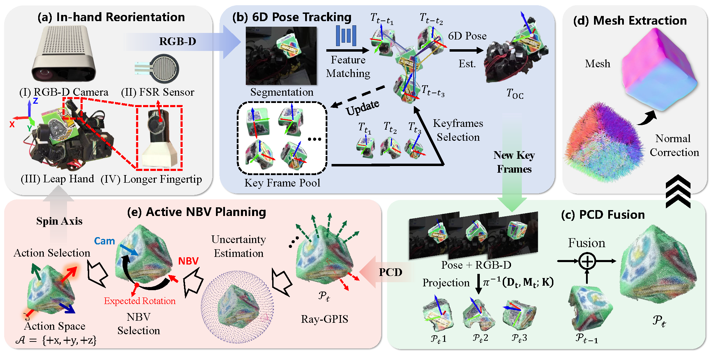
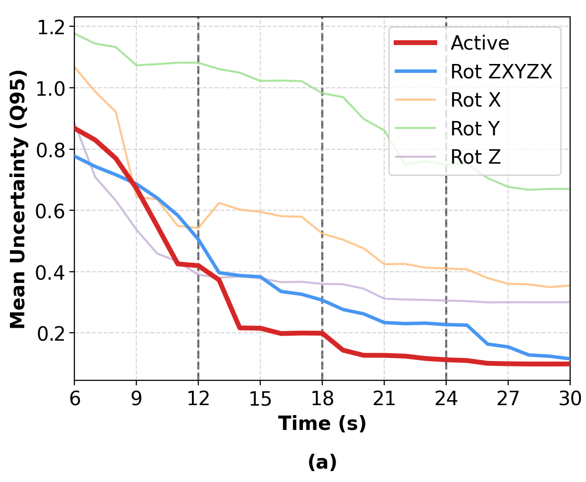
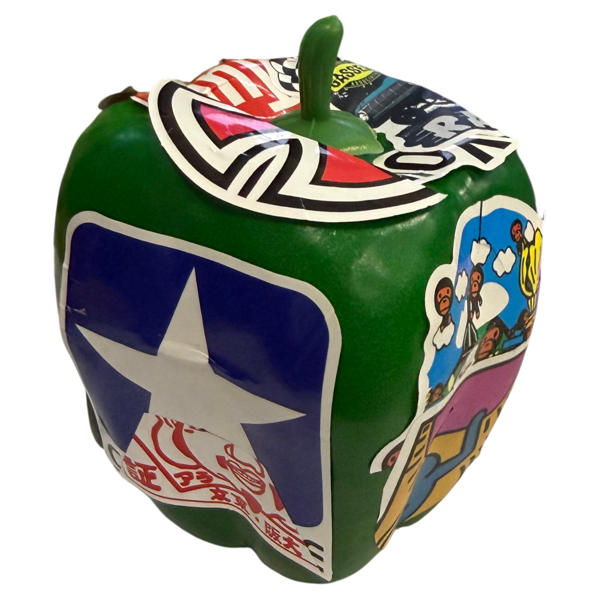
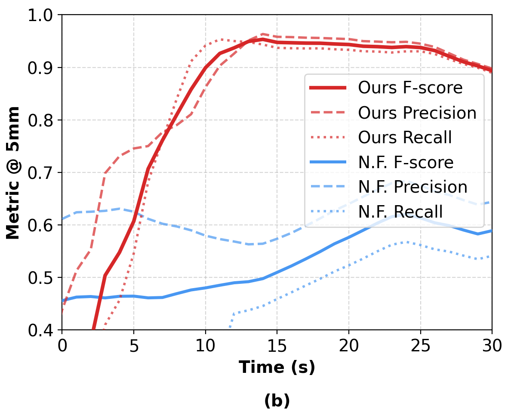

AURORA: Active Uncertainty-Driven Re-Orientation for In-Hand Reconstruction

Abstract
Recovering complete 3D geometry of robot-held objects is fundamentally limited by observability. The manipulator occludes the object, and only a small set of viewpoints is accessible during grasping, leaving large surface regions unobserved. Although in-hand manipulation can reveal these regions, most existing methods rely on fixed manipulation sequences and lack closed-loop reasoning about missing views. To bridge the gap, we present AURORA, an active in-hand 3D reconstruction framework that integrates perception, uncertainty-aware planning, and in-hand manipulation. Its core component Ray-GPIS estimates reconstruction uncertainty over viewing directions and selects next-best-view object reorientations that maximize information gain. These reorientations are executed using an axis-conditioned in-hand rotation policy. The observed manipulation sequence is processed through object segmentation, online 6D pose tracking, and incremental RGB-D fusion to produce efficient and high-fidelity reconstructions. Extensive real-world experiments on objects with diverse geometries show that AURORA consistently outperforms open-loop baselines, achieving higher completeness, faster convergence, and robust performance across varied shapes.
Pipeline
Overview of the proposed technical pipeline. The system integrates four modules: (a) in-hand object reorientation with the Leap Hand; (b) 6D pose tracking via BundleTrack; (c-d) reconstruction; (e) uncertainty-driven next-best-view planning.

Experiment I — Reconstruction Quality
We evaluate reconstruction performance on six graspable real-world objects under a fixed manipulation budget of 30 s. For each object, we show the qualitative results (RGB, online point cloud, offline refined mesh), followed by quantitative F-scores.
| Obj. | PCD–PCD (Online) | Mesh–Mesh (Offline) | ||||
|---|---|---|---|---|---|---|
| F@2 ↑ | F@5 ↑ | F@10 ↑ | F@2 ↑ | F@5 ↑ | F@10 ↑ | |
| Cube | 0.2895 | 0.9337 | 0.9977 | 0.6481 | 0.9557 | 0.9957 |
| Corner Block | 0.2353 | 0.7354 | 0.9303 | 0.5298 | 0.8559 | 0.9488 |
| L-shaped Block | 0.2306 | 0.8366 | 0.9886 | 0.4674 | 0.8367 | 0.9450 |
| Pepper | 0.1770 | 0.8321 | 0.9773 | 0.5480 | 0.8890 | 0.9913 |
| Cylinder | 0.4428 | 0.8400 | 0.9425 | 0.4035 | 0.8320 | 0.9372 |
| Cross Block | 0.1454 | 0.7718 | 0.9664 | 0.4601 | 0.8050 | 0.9850 |
| Mean | 0.2534 | 0.8249 | 0.9671 | 0.5095 | 0.8624 | 0.9672 |
| Std. | 0.1054 | 0.0679 | 0.0263 | 0.0855 | 0.0535 | 0.0262 |
Summary. Under a fixed 30 s manipulation budget, our framework delivers strong online reconstructions with an average F@10 = 0.9671 ± 0.0263 and F@5 = 0.8249 ± 0.0679. The offline refinement stage further improves geometric consistency and reduces residual artifacts, achieving F@10 = 0.9672 ± 0.0262 and F@5 = 0.8624 ± 0.0535. Remaining errors are primarily caused by sensing noise and small pose misalignments due to tracking inaccuracies.
Experiment II — Efficiency vs Non-active Baselines
We compare five rotation strategies using the temporal evolution of the uncertainty tail \(q_{95}\): ours, a fixed schedule \(z\!\rightarrow\!x\!\rightarrow\!y\!\rightarrow\!z\!\rightarrow\!x\), and single-axis baselines (\(x\)-only/\(y\)-only/\(z\)-only). Below, we show the offline refined meshes for all five strategies (normal colormap).


Tip. Click the small Normals ▸ legend to expand/collapse the colorbar (so it never blocks the mesh).
Discussion — Comparison with Neural Feels
We compare AURORA with Neural Feels under a matched 30 s interaction budget on Pepper. Our method achieves higher F@5mm and produces more complete geometry via active replanning and stable in-palm reorientation.

Efficiency. Neural Feels reports 417.13 s wall-clock time for reconstruction from a 30 s window, while ours completes the same stage in 61.82 s (~6.7× faster), enabling substantially lower end-to-end latency.